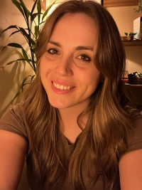

Maitê Maus | WDD 130

Olá! Meu nome é Maitê Maus e sou do Rio Grande do Sul, Brasil.
Sou esposa, mãe de 2 meninos e de 2 gatos. No meu tempo livre, adoro cozinhar, cultivar plantas, fazer crochê e aprender coisas novas! Estou cursando o WDD 130 na BYU-Pathway Worldwide, e estou adorando conhecer mais sobre desenvolvimento web!